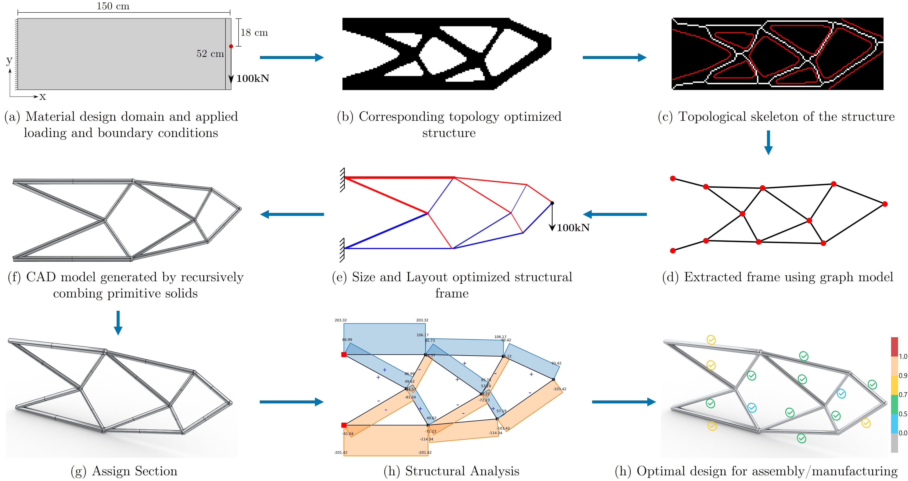

This research developed an automated computational workflow for generating structurally robust, ready-to-manufacture CAD models of skeletal structures from topology-optimized continuum designs. The key challenge addressed is the gap between mathematically optimal topologies and practically constructible structures: topology optimization produces smooth, complex geometries that are difficult to manufacture using standard industry shapes.
The developed workflow unifies topology, layout, and size optimization within a single parametric platform. Starting from a 2D topology-optimized binary image, a modified Zhang–Suen skeletonization algorithm extracts a one-pixel-wide medial axis, which is then converted into a spatial frame model using graph theory. The frame members undergo iterative size and layout optimization, and a final CAD model is generated by recursively combining constructive solid geometry primitives. All outputs are checked against standard codes of practice — Eurocode 3 for steel structures — ensuring structural integrity under axial, bending, shear, and buckling failure modes.
The workflow is fully implemented in Rhinoceros 3D with Grasshopper and a Python coding environment, making it accessible to practicing engineers without requiring bespoke manufacturing techniques.

Fig. 1 — Complete workflow illustrated on a cantilevered beam example: (a) design domain, (b) topology-optimized structure, (c) topological skeleton, (d) extracted frame, (e) size and layout optimized frame, (f–g) CAD model generation, (h) structural analysis, (i) code-compliant optimal design.
L.S. Sarma, C. Mallikarachchi and S. Herath, "Design-Informed Generative Modelling of Skeletal Structures using Structural Optimization," Computers and Structures, vol. 302, p. 107474, 2024. [Link]